Excel & Web-Based Academic Automation Tool
This system was developed to automate student result processing, ranking, and report generation. It reduces manual work and improves accuracy in school academic management.
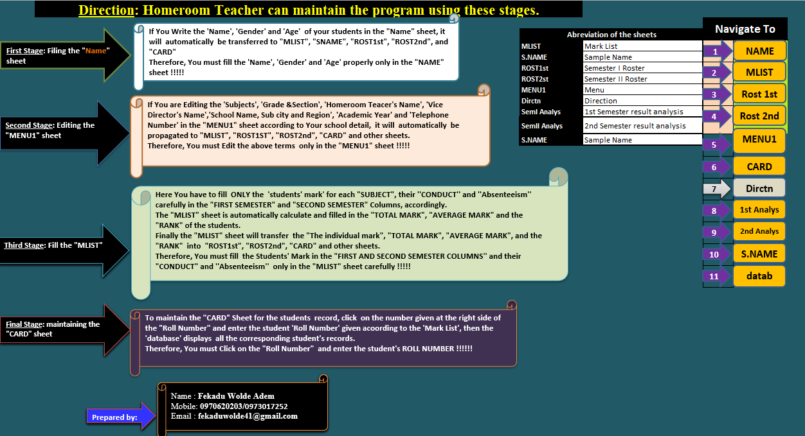
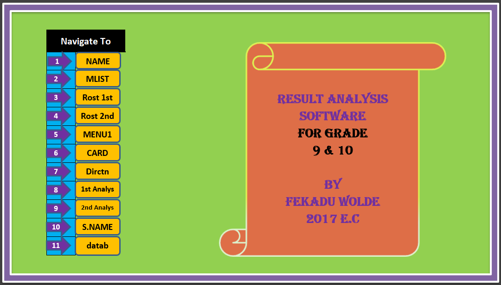
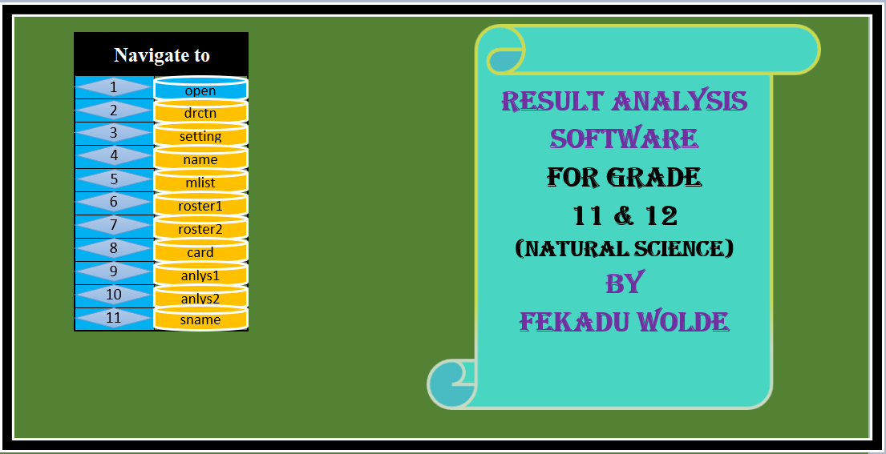
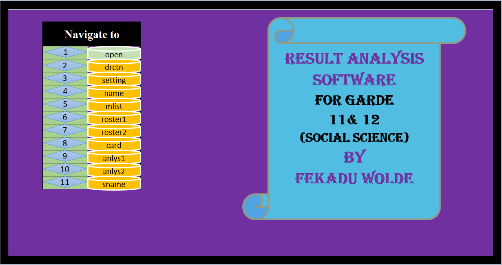
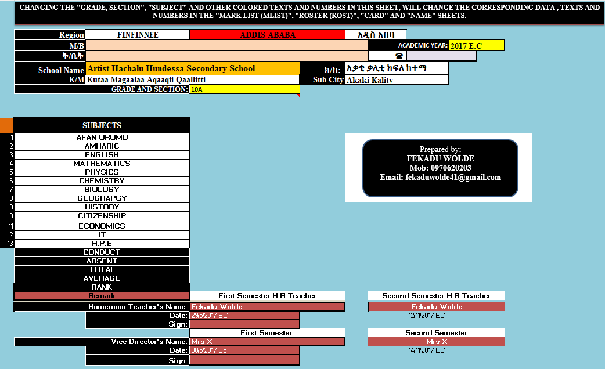
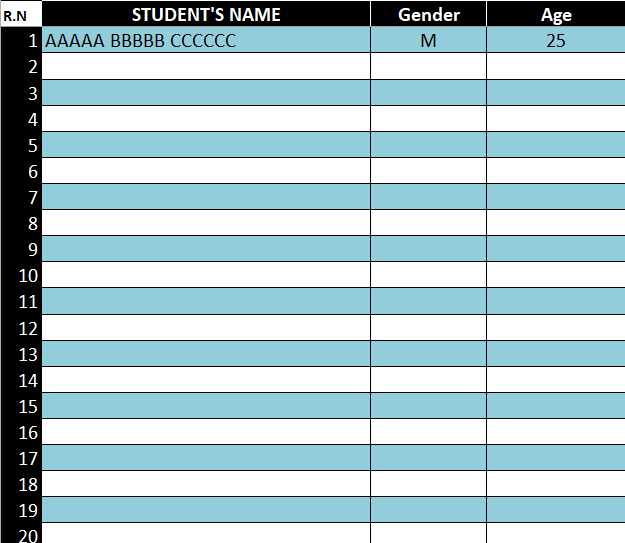
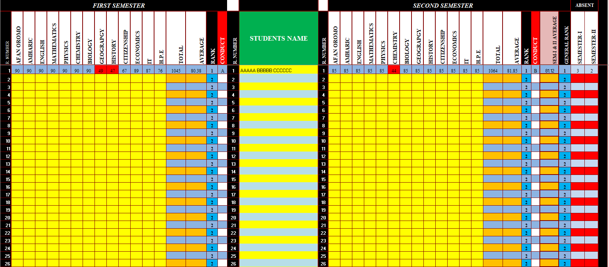
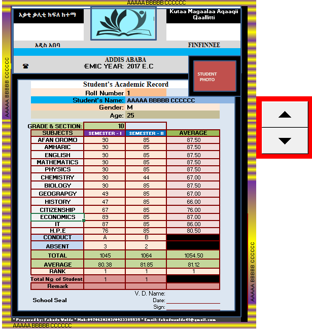
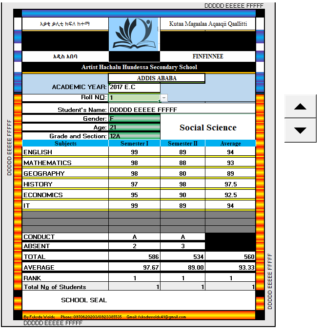
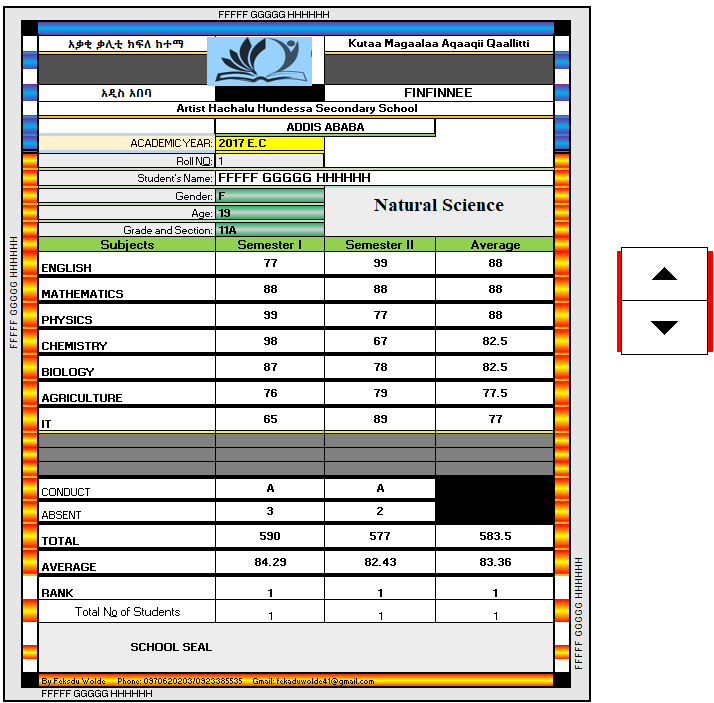
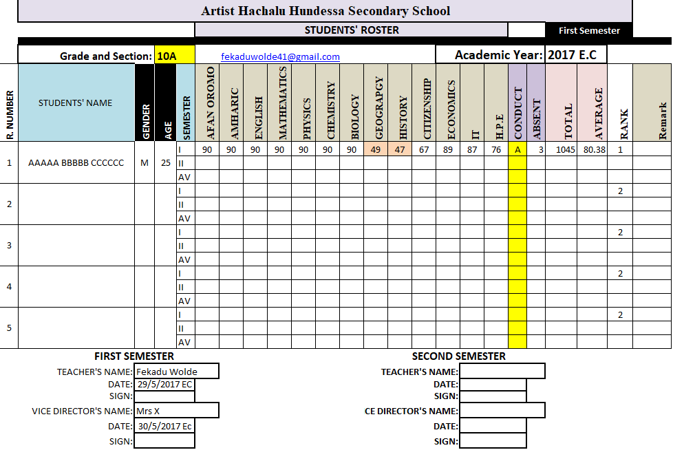
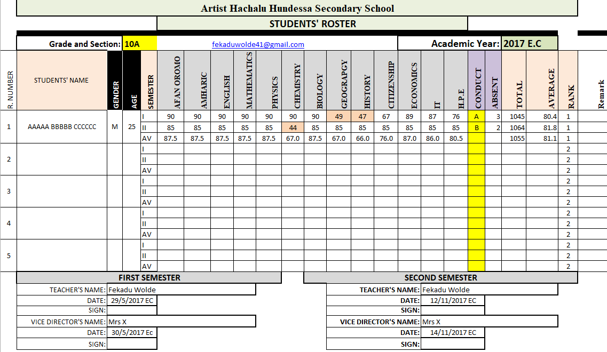
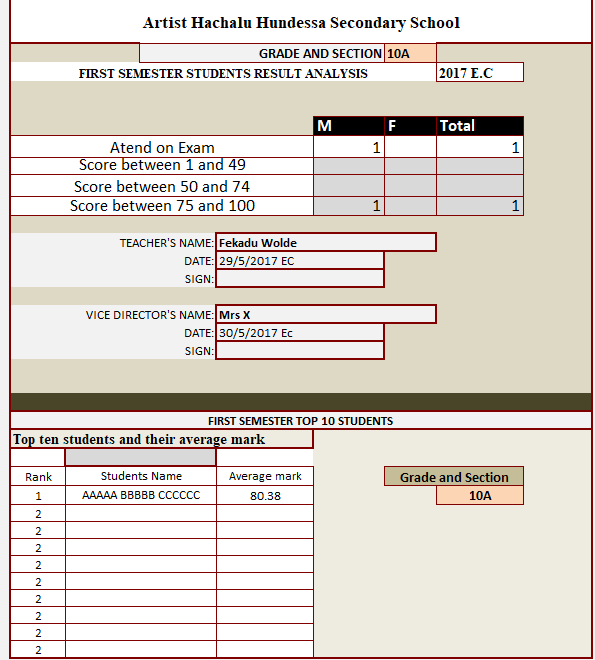
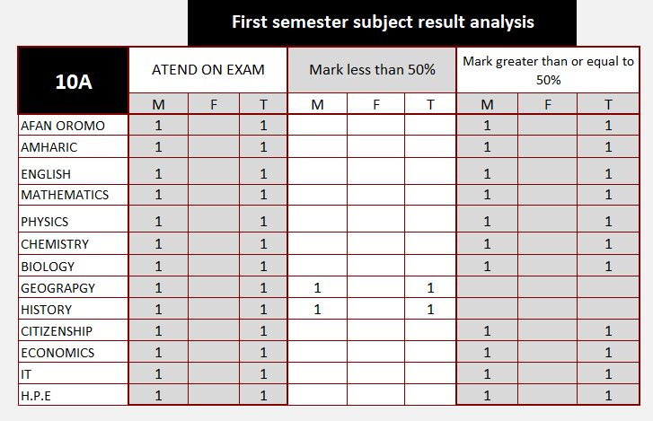
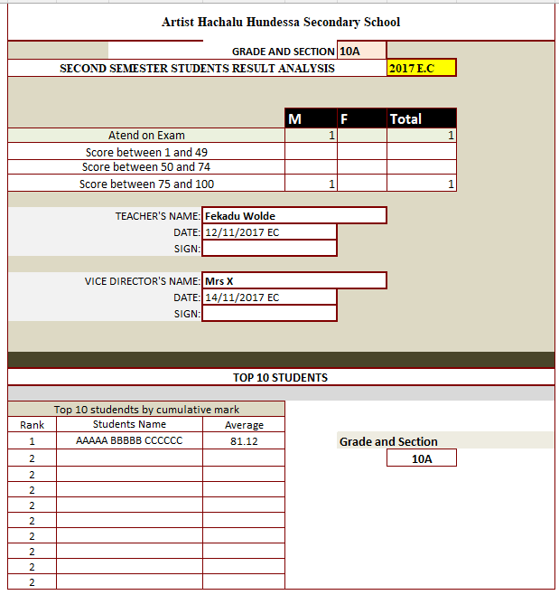
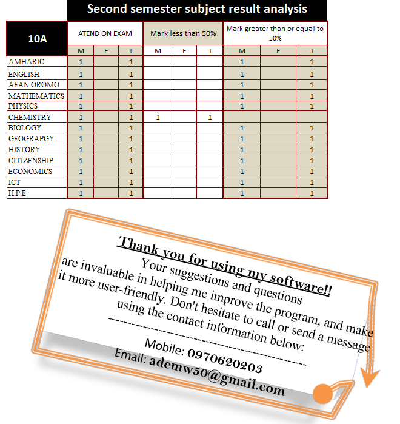